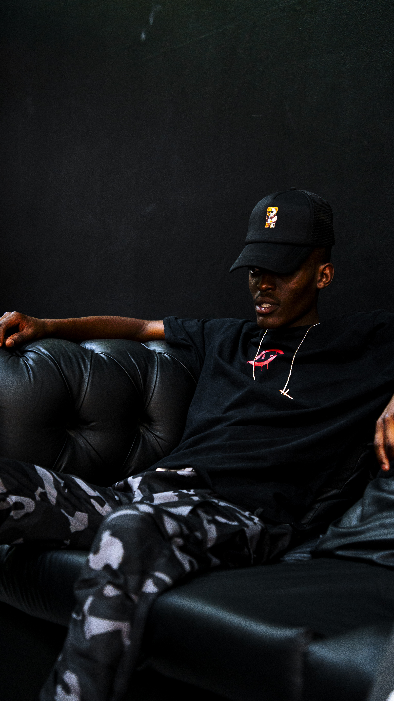
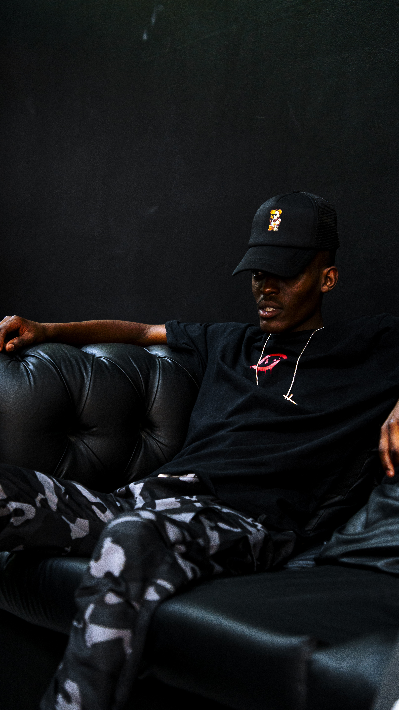

Jaymes65
Afro House DJ | Centurion, Gauteng
🧑🎤 About Me
I’m Jaymes T Manyange—also known as Jaymes65—a DJ with a passion for creating unforgettable vibes. I’m all about blending sounds and energy to give every crowd an experience they won’t forget. Over the last 3+ years, I’ve been rocking stages at clubs, festivals, and private events with a sound that’s bold, electrifying, and uniquely mine.
My style? A smooth mix of Afro House with touches of Hip Hop and other genres to keep things fresh and unpredictable. It’s about more than just playing music—it’s about creating moments.
I started my journey in 2022, making waves in my local scene. Since then, I’ve grown into a recognized name, taking my sets to bigger stages and international ears.
🎤 Notable Performances
- News Café @ Mall@55 – Centurion
- African Chef – Centurion
- Cubana Fourways - Fourway
- The Palms Backyard – Centurion
📰 Press Coverage
Music Monthly called him “a revolutionary force,” while Global Beats Blog praised his fast rise in the industry. The Daily Sound highlighted his unique approach and impact on the music world.
💬 What People Are Saying
“Jaymes65 knows how to read the crowd and deliver exactly what they need. Every set is a journey.” – Alex Johnson, Electric Nights Festival
“A true artist in every sense. Jaymes65’s performances are always the highlight of our events.” – Erma Kincaid, Club Pulse
📸 Photo Gallery
 


📞 Bookings & Contact
Phone: +27 81 593 8956
Email: Jaygraphic65@gmail.com